CODING AGENTS AS PIXEL WORLD MODELS
traex/DeepSeek-V4.1-Flash · common50_0022
点击播放 · 原生 RGB 像素
逐轮保存的候选
回放视频、检查图与代码变化。
每份候选均可单独播放。实际图片检查记录在下方工具轨迹中。
候选 01播放与检查图
点击播放 · 原生 RGB 像素

展开代码变化
--- 上一保存版本
+++ 本次保存版本
@@ -0,0 +1,113 @@
+from pathlib import Path
+
+import cv2
+import numpy as np
+
+import artifact_io
+
+
+CASE_DIR = Path(__file__).resolve().parent
+FRAME_COUNT = 20
+HEIGHT = 256
+WIDTH = 256
+
+
+def smoothstep(value):
+ value = np.clip(value, 0.0, 1.0)
+ return value * value * (3.0 - 2.0 * value)
+
+
+def ease(value):
+ value = np.clip(value, 0.0, 1.0)
+ return 0.5 - 0.5 * np.cos(np.pi * value)
+
+
+def motion_at(frame_index):
+ """Lift, carry right, lower, and settle the occupied hand."""
+ if frame_index <= 4:
+ phase = ease(frame_index / 4.0)
+ return 1.5 * phase, -7.0 * phase, 1.2 * phase
+ if frame_index <= 12:
+ phase = ease((frame_index - 4) / 8.0)
+ return 1.5 + 18.5 * phase, -7.0 + 3.0 * phase, 1.2 + 1.5 * phase
+ if frame_index <= 16:
+ phase = ease((frame_index - 12) / 4.0)
+ return 20.0, -4.0 + 6.0 * phase, 2.7 - 1.7 * phase
+
+ phase = ease((frame_index - 16) / 3.0)
+ return 20.0 + 0.35 * phase, 2.0 + 0.35 * phase, 1.0 - 0.45 * phase
+
+
+def moving_weight(height, width):
+ """Smoothly anchored influence field around the left hand and sachet."""
+ yy, xx = np.mgrid[:height, :width].astype(np.float32)
+ left = smoothstep((xx - 101.0) / 14.0)
+ right = 1.0 - smoothstep((xx - 181.0) / 22.0)
+ top = smoothstep((yy - 132.0) / 15.0)
+ bottom = 1.0 - smoothstep((yy - 214.0) / 30.0)
+ weight = left * right * top * bottom
+ return cv2.GaussianBlur(weight, (0, 0), 2.2)
+
+
+def warp_foreground(frame, dx, dy, angle_degrees, weight):
+ height, width = frame.shape[:2]
+ yy, xx = np.mgrid[:height, :width].astype(np.float32)
+ center_x, center_y = 140.0, 184.0
+
+ # Inverse-map a rigid transform whose strength fades into the wrist.
+ angle = np.deg2rad(angle_degrees) * weight
+ cos_a = np.cos(angle)
+ sin_a = np.sin(angle)
+ px = xx - center_x - dx * weight
+ py = yy - center_y - dy * weight
+ map_x = center_x + cos_a * px + sin_a * py
+ map_y = center_y - sin_a * px + cos_a * py
+
+ warped = cv2.remap(
+ frame,
+ map_x.astype(np.float32),
+ map_y.astype(np.float32),
+ interpolation=cv2.INTER_CUBIC,
+ borderMode=cv2.BORDER_REFLECT_101,
+ )
+ return warped
+
+
+def add_temporal_texture(frame, frame_index):
+ """Very small sensor-like variation keeps the static camera from feeling frozen."""
+ if frame_index == 0:
+ return frame
+ rng = np.random.default_rng(1907 + frame_index)
+ noise = rng.normal(0.0, 0.55, frame.shape[:2]).astype(np.float32)
+ noise = cv2.GaussianBlur(noise, (0, 0), 0.55)
+ result = frame.astype(np.float32) + noise[:, :, None]
+ return np.clip(result, 0, 255).astype(np.uint8)
+
+
+def generate():
+ source = cv2.cvtColor(
+ cv2.imread(str(CASE_DIR / "first_frame.png"), cv2.IMREAD_COLOR),
+ cv2.COLOR_BGR2RGB,
+ )
+ if source.shape != (HEIGHT, WIDTH, 3):
+ raise ValueError(f"Unexpected first-frame shape: {source.shape}")
+
+ weight = moving_weight(HEIGHT, WIDTH)
+ frames = []
+ for frame_index in range(FRAME_COUNT):
+ if frame_index == 0:
+ frames.append(source.copy())
+ continue
+ dx, dy, angle = motion_at(frame_index)
+ frame = warp_foreground(source, dx, dy, angle, weight)
+ frames.append(add_temporal_texture(frame, frame_index))
+
+ frames = np.stack(frames, axis=0)
+ assert frames.shape == (FRAME_COUNT, HEIGHT, WIDTH, 3)
+ assert frames.dtype == np.uint8
+ assert np.array_equal(frames[0], source)
+ return frames
+
+
+if __name__ == "__main__":
+ artifact_io.save(generate(), CASE_DIR)
候选 02播放与检查图
点击播放 · 原生 RGB 像素
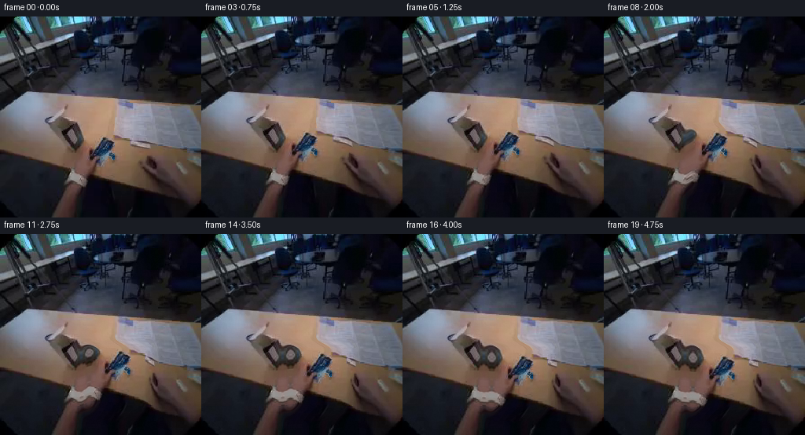
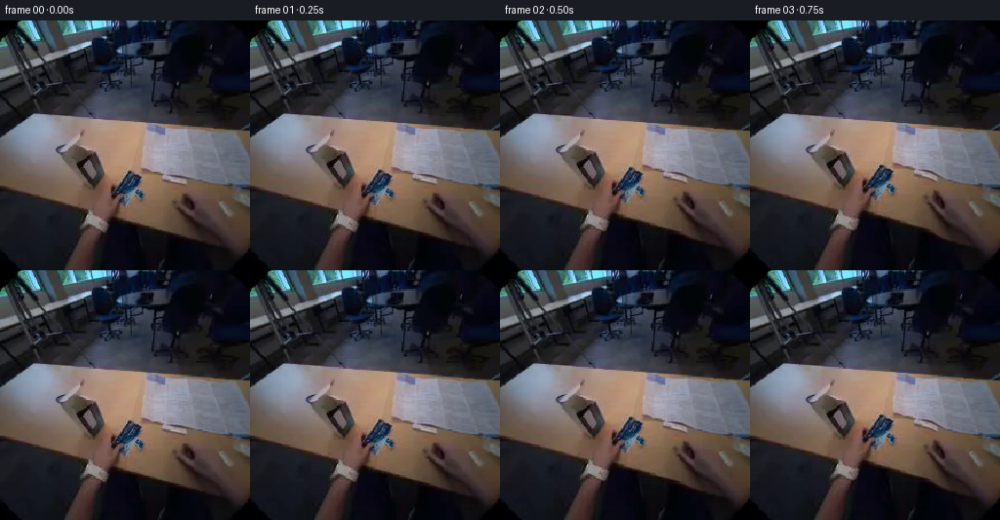
展开代码变化
--- 上一保存版本
+++ 本次保存版本
@@ -26,23 +26,23 @@
"""Lift, carry right, lower, and settle the occupied hand."""
if frame_index <= 4:
phase = ease(frame_index / 4.0)
- return 1.5 * phase, -7.0 * phase, 1.2 * phase
+ return 3.0 * phase, -12.0 * phase, 2.0 * phase
if frame_index <= 12:
phase = ease((frame_index - 4) / 8.0)
- return 1.5 + 18.5 * phase, -7.0 + 3.0 * phase, 1.2 + 1.5 * phase
+ return 3.0 + 15.0 * phase, -12.0 + 17.0 * phase, 2.0 + 1.5 * phase
if frame_index <= 16:
phase = ease((frame_index - 12) / 4.0)
- return 20.0, -4.0 + 6.0 * phase, 2.7 - 1.7 * phase
+ return 18.0, 5.0 + 4.0 * phase, 3.5 - 2.0 * phase
phase = ease((frame_index - 16) / 3.0)
- return 20.0 + 0.35 * phase, 2.0 + 0.35 * phase, 1.0 - 0.45 * phase
+ return 18.0 + 0.25 * phase, 9.0 + 0.25 * phase, 1.5 - 0.5 * phase
def moving_weight(height, width):
"""Smoothly anchored influence field around the left hand and sachet."""
yy, xx = np.mgrid[:height, :width].astype(np.float32)
left = smoothstep((xx - 101.0) / 14.0)
- right = 1.0 - smoothstep((xx - 181.0) / 22.0)
+ right = 1.0 - smoothstep((xx - 166.0) / 16.0)
top = smoothstep((yy - 132.0) / 15.0)
bottom = 1.0 - smoothstep((yy - 214.0) / 30.0)
weight = left * right * top * bottom
候选 03播放与检查图
候选 04播放与检查图
点击播放 · 原生 RGB 像素
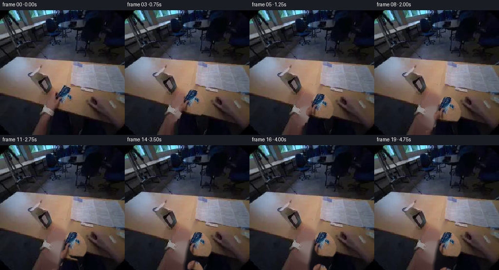
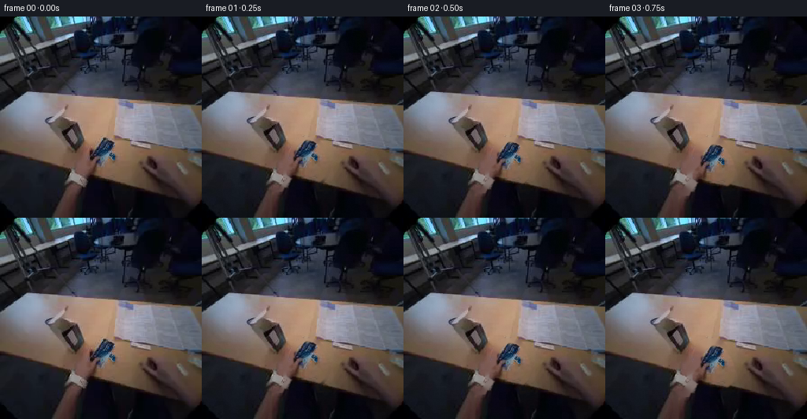
展开代码变化
--- 上一保存版本
+++ 本次保存版本
@@ -12,96 +12,189 @@
WIDTH = 256
-def smoothstep(value):
- value = np.clip(value, 0.0, 1.0)
- return value * value * (3.0 - 2.0 * value)
-
-
def ease(value):
value = np.clip(value, 0.0, 1.0)
return 0.5 - 0.5 * np.cos(np.pi * value)
-def motion_at(frame_index):
- """Lift, carry right, lower, and settle the occupied hand."""
- if frame_index <= 4:
- phase = ease(frame_index / 4.0)
- return 3.0 * phase, -12.0 * phase, 2.0 * phase
- if frame_index <= 12:
- phase = ease((frame_index - 4) / 8.0)
- return 3.0 + 15.0 * phase, -12.0 + 17.0 * phase, 2.0 + 1.5 * phase
+def polygon_mask(points, feather=0.8):
+ mask = np.zeros((HEIGHT, WIDTH), dtype=np.uint8)
+ cv2.fillPoly(mask, [np.asarray(points, dtype=np.int32)], 255)
+ if feather:
+ mask = cv2.GaussianBlur(mask, (0, 0), feather)
+ return mask.astype(np.float32) / 255.0
+
+
+def make_layers(source):
+ # The two masks overlap behind the bag. Inpainting their union lets the
+ # bag and hand animate independently without dragging the table texture.
+ object_mask = polygon_mask(
+ [
+ (116, 183),
+ (117, 171),
+ (122, 161),
+ (130, 157),
+ (140, 157),
+ (148, 163),
+ (156, 176),
+ (159, 191),
+ (155, 203),
+ (148, 210),
+ (135, 212),
+ (124, 208),
+ (118, 199),
+ (115, 190),
+ ]
+ )
+ hand_mask = polygon_mask(
+ [
+ (88, 256),
+ (91, 244),
+ (97, 229),
+ (105, 216),
+ (114, 205),
+ (107, 200),
+ (107, 194),
+ (110, 188),
+ (116, 184),
+ (123, 184),
+ (130, 188),
+ (136, 196),
+ (141, 208),
+ (146, 223),
+ (151, 241),
+ (154, 256),
+ ],
+ feather=0.65,
+ )
+ hand_mask[222:256, 88:153] = np.maximum(
+ hand_mask[222:256, 88:153],
+ polygon_mask([(88, 221), (154, 221), (154, 256), (88, 256)], feather=0.65)[
+ 222:256, 88:153
+ ],
+ )
+
+ removal = np.clip(object_mask + hand_mask, 0.0, 1.0)
+ removal_u8 = (cv2.dilate(removal, np.ones((5, 5), np.uint8)) * 255).astype(
+ np.uint8
+ )
+ background = cv2.inpaint(source, removal_u8, 8, cv2.INPAINT_TELEA)
+ return background, hand_mask, object_mask
+
+
+def transform_layer(image, alpha, dx, dy, angle, center):
+ matrix = cv2.getRotationMatrix2D(center, angle, 1.0)
+ matrix[:, 2] += (dx, dy)
+ moved = cv2.warpAffine(
+ image,
+ matrix,
+ (WIDTH, HEIGHT),
+ flags=cv2.INTER_CUBIC,
+ borderMode=cv2.BORDER_REFLECT_101,
+ )
+ moved_alpha = cv2.warpAffine(
+ alpha,
+ matrix,
+ (WIDTH, HEIGHT),
+ flags=cv2.INTER_LINEAR,
+ borderMode=cv2.BORDER_CONSTANT,
+ borderValue=0,
+ )
+ return moved, np.clip(moved_alpha, 0.0, 1.0)
+
+
+def object_pose(frame_index):
+ """The bag is carried right and lowered onto the table."""
+ phase = ease(frame_index / 8.0)
+ settle = ease((frame_index - 8.0) / 7.0) if frame_index > 8 else 0.0
+ dx = 18.0 * phase + 0.25 * settle
+ dy = 20.0 * phase + 0.35 * settle
+ angle = 10.0 * phase - 0.6 * settle
+ return dx, dy, angle
+
+
+def hand_pose(frame_index):
+ """Hold through placement, then withdraw below the frame to release."""
+ if frame_index <= 9:
+ phase = ease(frame_index / 9.0)
+ return 16.0 * phase, 22.0 * phase, 6.0 * phase
+
if frame_index <= 16:
- phase = ease((frame_index - 12) / 4.0)
- return 18.0, 5.0 + 4.0 * phase, 3.5 - 2.0 * phase
+ phase = ease((frame_index - 9) / 7.0)
+ return 16.0 + 7.0 * phase, 22.0 + 38.0 * phase, 6.0 - 9.0 * phase
phase = ease((frame_index - 16) / 3.0)
- return 18.0 + 0.25 * phase, 9.0 + 0.25 * phase, 1.5 - 0.5 * phase
-
-
-def moving_weight(height, width):
- """Smoothly anchored influence field around the left hand and sachet."""
- yy, xx = np.mgrid[:height, :width].astype(np.float32)
- left = smoothstep((xx - 101.0) / 14.0)
- right = 1.0 - smoothstep((xx - 166.0) / 16.0)
- top = smoothstep((yy - 132.0) / 15.0)
- bottom = 1.0 - smoothstep((yy - 214.0) / 30.0)
- weight = left * right * top * bottom
- return cv2.GaussianBlur(weight, (0, 0), 2.2)
-
-
-def warp_foreground(frame, dx, dy, angle_degrees, weight):
- height, width = frame.shape[:2]
- yy, xx = np.mgrid[:height, :width].astype(np.float32)
- center_x, center_y = 140.0, 184.0
-
- # Inverse-map a rigid transform whose strength fades into the wrist.
- angle = np.deg2rad(angle_degrees) * weight
- cos_a = np.cos(angle)
- sin_a = np.sin(angle)
- px = xx - center_x - dx * weight
- py = yy - center_y - dy * weight
- map_x = center_x + cos_a * px + sin_a * py
- map_y = center_y - sin_a * px + cos_a * py
-
- warped = cv2.remap(
- frame,
- map_x.astype(np.float32),
- map_y.astype(np.float32),
- interpolation=cv2.INTER_CUBIC,
- borderMode=cv2.BORDER_REFLECT_101,
- )
- return warped
-
-
-def add_temporal_texture(frame, frame_index):
- """Very small sensor-like variation keeps the static camera from feeling frozen."""
+ return 23.0 + 2.0 * phase, 60.0 + 7.0 * phase, -3.0 - 1.0 * phase
+
+
+def composite(source, background, hand_mask, object_mask, frame_index):
if frame_index == 0:
- return frame
+ return source.copy()
+
+ object_dx, object_dy, object_angle = object_pose(frame_index)
+ hand_dx, hand_dy, hand_angle = hand_pose(frame_index)
+ bag, bag_alpha = transform_layer(
+ source,
+ object_mask,
+ object_dx,
+ object_dy,
+ object_angle,
+ (138.0, 187.0),
+ )
+ hand, hand_alpha = transform_layer(
+ source,
+ hand_mask,
+ hand_dx,
+ hand_dy,
+ hand_angle,
+ (124.0, 205.0),
+ )
+
+ result = background.astype(np.float32)
+
+ # A restrained, blurred occlusion beneath the bag makes the placement
+ # read as contact rather than a pasted-on cutout.
+ shadow_matrix = cv2.getRotationMatrix2D((138.0, 187.0), object_angle, 1.0)
+ shadow_matrix[:, 2] += (object_dx, object_dy + 7.0)
+ shadow_alpha = cv2.warpAffine(
+ object_mask,
+ shadow_matrix,
+ (WIDTH, HEIGHT),
+ flags=cv2.INTER_LINEAR,
+ borderMode=cv2.BORDER_CONSTANT,
+ borderValue=0,
+ )
+ shadow_alpha = cv2.GaussianBlur(shadow_alpha, (0, 0), 3.5)
+ shadow_strength = 0.11 * ease(frame_index / 8.0)
+ result *= 1.0 - shadow_strength * shadow_alpha[:, :, None]
+
+ result = result * (1.0 - hand_alpha[:, :, None]) + hand.astype(
+ np.float32
+ ) * hand_alpha[:, :, None]
+ result = result * (1.0 - bag_alpha[:, :, None]) + bag.astype(
+ np.float32
+ ) * bag_alpha[:, :, None]
+
rng = np.random.default_rng(1907 + frame_index)
- noise = rng.normal(0.0, 0.55, frame.shape[:2]).astype(np.float32)
+ noise = rng.normal(0.0, 0.45, (HEIGHT, WIDTH)).astype(np.float32)
noise = cv2.GaussianBlur(noise, (0, 0), 0.55)
- result = frame.astype(np.float32) + noise[:, :, None]
+ result += noise[:, :, None]
return np.clip(result, 0, 255).astype(np.uint8)
def generate():
- source = cv2.cvtColor(
- cv2.imread(str(CASE_DIR / "first_frame.png"), cv2.IMREAD_COLOR),
- cv2.COLOR_BGR2RGB,
- )
+ source_bgr = cv2.imread(str(CASE_DIR / "first_frame.png"), cv2.IMREAD_COLOR)
+ if source_bgr is None:
+ raise FileNotFoundError(CASE_DIR / "first_frame.png")
+ source = cv2.cvtColor(source_bgr, cv2.COLOR_BGR2RGB)
if source.shape != (HEIGHT, WIDTH, 3):
raise ValueError(f"Unexpected first-frame shape: {source.shape}")
- weight = moving_weight(HEIGHT, WIDTH)
- frames = []
- for frame_index in range(FRAME_COUNT):
- if frame_index == 0:
- frames.append(source.copy())
- continue
- dx, dy, angle = motion_at(frame_index)
- frame = warp_foreground(source, dx, dy, angle, weight)
- frames.append(add_temporal_texture(frame, frame_index))
-
+ background, hand_mask, object_mask = make_layers(source)
+ frames = [
+ composite(source, background, hand_mask, object_mask, index)
+ for index in range(FRAME_COUNT)
+ ]
frames = np.stack(frames, axis=0)
assert frames.shape == (FRAME_COUNT, HEIGHT, WIDTH, 3)
assert frames.dtype == np.uint8
候选 05播放与检查图
点击播放 · 原生 RGB 像素

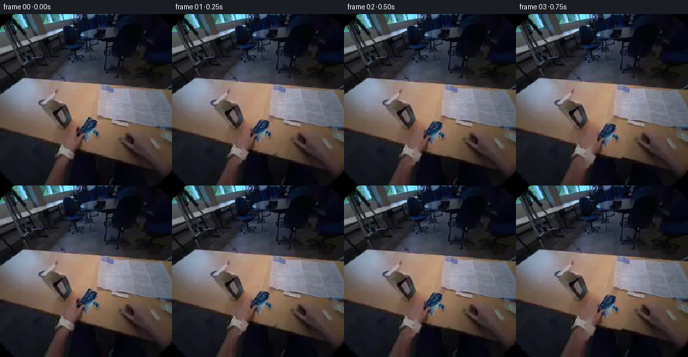
展开代码变化
--- 上一保存版本
+++ 本次保存版本
@@ -115,16 +115,16 @@
def hand_pose(frame_index):
"""Hold through placement, then withdraw below the frame to release."""
- if frame_index <= 9:
- phase = ease(frame_index / 9.0)
- return 16.0 * phase, 22.0 * phase, 6.0 * phase
-
- if frame_index <= 16:
- phase = ease((frame_index - 9) / 7.0)
- return 16.0 + 7.0 * phase, 22.0 + 38.0 * phase, 6.0 - 9.0 * phase
-
- phase = ease((frame_index - 16) / 3.0)
- return 23.0 + 2.0 * phase, 60.0 + 7.0 * phase, -3.0 - 1.0 * phase
+ if frame_index <= 8:
+ phase = ease(frame_index / 8.0)
+ return 18.0 * phase, 22.0 * phase, 6.0 * phase
+
+ if frame_index <= 15:
+ phase = ease((frame_index - 8) / 7.0)
+ return 18.0 + 17.0 * phase, 22.0 + 42.0 * phase, 6.0 - 10.0 * phase
+
+ phase = ease((frame_index - 15) / 4.0)
+ return 35.0 + 3.0 * phase, 64.0 + 10.0 * phase, -4.0 - 1.0 * phase
def composite(source, background, hand_mask, object_mask, frame_index):
可观测工具轨迹
实际执行的命令与返回图片。
命令 1exit 0
/bin/bash -c "sed -n '1,240p' prompt.txt"
命令 2exit 0
/bin/bash -c "sed -n '1,280p' GENERATION_RULES.md"
命令 3exit 0
/bin/bash -c "pwd && rg --files -g 'prompt.txt' -g 'GENERATION_RULES.md' -g '*.png' -g '*.jpg' -g '*.mp4' -g '*.py' -g '*.sh' | sed -n '1,200p'"
命令 4exit 0
/bin/bash -c "find . -maxdepth 3 -type f -printf '%p %s bytes\\n' | sort | sed -n '1,240p'"
命令 5exit 0
/bin/bash -c "sed -n '1,260p' artifact_io.py"
命令 6exit 0
/bin/bash -c "cat task_spec.json && python - <<'PY'
from PIL import Image
im=Image.open('first_frame.png')
print(im.mode, im.size)
PY"命令 7exit 0
/bin/bash -c "python - <<'PY' import importlib.util mods=['numpy','PIL','cv2','scipy','imageio','matplotlib','torch','moviepy'] for m in mods: print(m, bool(importlib.util.find_spec(m))) PY"
命令 8exit 0
/bin/bash -c "python - <<'PY'
from PIL import Image
im=Image.open('first_frame.png')
# enlarge foreground and hands
im.crop((45,130,245,256)).resize((800,504),Image.Resampling.NEAREST).save('.tmp/foreground_zoom.png')
PY"命令 9exit 0
/bin/bash -c 'python generate.py'
命令 10exit 0
/bin/bash -c "python - <<'PY'
from PIL import Image, ImageDraw
ims=[]
for i in [0,2,4,6,8,10,12,14,16,19]:
im=Image.open(f'frames/{i:02d}.png').convert('RGB')
ims.append((i,im))
out=Image.new('RGB',(5*384,2*(384+22)),(30,30,30))
d=ImageDraw.Draw(out)
for j,(i,im) in enumerate(ims):
x=(j%5)*384;y=(j//5)*(384+22)
d.text((x+4,y+2),str(i),fill='white')
out.paste(im.resize((384,384),Image.Resampling.NEAREST),(x,y+22))
out.save('.tmp/sequence_zoom.png')
PY"命令 11exit 0
/bin/bash -c 'python generate.py'
命令 12exit 1
/bin/bash -c "python - <<'PY'
import cv2, numpy as np
from PIL import Image
im=cv2.imread('first_frame.png')
h,w=im.shape[:2]
mask=np.full((h,w),cv2.GC_BGD,np.uint8)
# rectangle region around sachet + hand
rect=(91,147,77,109)
mask[:]=cv2.GC_PR_BGD
mask[147:256,91:168]=cv2.GC_PR_FGD
# definite foreground polygons
fg=np.zeros((h,w),np.uint8)
cv2.rectangle(fg,(122,157),(156,203),255,-1)
cv2.fillPoly(fg,[np.array([(110,255),(96,233),(98,215),(110,202),(117,193),(122,188),(130,187),(137,194),(143,215),(149,239),(151,255)],np.int32)],255)
cv2.rectangle(fg,(97,216),(124,235),255,-1)
mask[fg>0]=cv2.GC_FGD
# definite bg table region close to object where safe
bg=np.zeros((h,w),np.uint8)
cv2.rectangle(bg,(90,145),(168,156),255,-1)
cv2.rectangle(bg,(90,205),(105,255),255,-1)
cv2.rectangle(bg,(158,145),(168,255),255,-1)
mask[bg>0]=cv2.GC_BGD
bgm=np.zeros((1,65),np.uint8)
cv2.grabCut(im,mask,rect,bgm,bgm,7,cv2.GC_INIT_WITH_MASK)
fgmask=np.where((mask==cv2.GC_FGD)|(mask==cv2.GC_PR_FGD),255,0).astype(np.uint8)
# retain hand and sachet; smooth but keep fine edges
fgmask=cv2.morphologyEx(fgmask,cv2.MORPH_CLOSE,np.ones((3,3),np.uint8))
fgmask=cv2.GaussianBlur(fgmask,(3,3),0)
Image.fromarray(fgmask).save('.tmp/hand_mask.png')
vis=im.copy(); vis[fgmask>127]=(0.55*vis[fgmask>127]+0.45*np.array([0,255,0])).astype(np.uint8)
cv2.imwrite('.tmp/hand_mask_vis.png',vis)
PY"命令 13exit 0
/bin/bash -c "python - <<'PY'
import cv2, numpy as np
from PIL import Image
im=cv2.imread('first_frame.png')
h,w=im.shape[:2]
mask=np.full((h,w),cv2.GC_PR_BGD,np.uint8)
mask[147:256,91:168]=cv2.GC_PR_FGD
fg=np.zeros((h,w),np.uint8)
cv2.rectangle(fg,(122,157),(156,203),255,-1)
cv2.fillPoly(fg,[np.array([(110,255),(96,233),(98,215),(110,202),(117,193),(122,188),(130,187),(137,194),(143,215),(149,239),(151,255)],np.int32)],255)
cv2.rectangle(fg,(97,216),(124,235),255,-1)
mask[fg>0]=cv2.GC_FGD
bg=np.zeros((h,w),np.uint8)
cv2.rectangle(bg,(90,145),(168,156),255,-1)
cv2.rectangle(bg,(90,205),(105,255),255,-1)
cv2.rectangle(bg,(158,145),(168,255),255,-1)
mask[bg>0]=cv2.GC_BGD
cv2.grabCut(im,mask,(91,147,77,109),None,None,7,cv2.GC_INIT_WITH_MASK)
fgmask=np.where((mask==cv2.GC_FGD)|(mask==cv2.GC_PR_FGD),255,0).astype(np.uint8)
fgmask=cv2.morphologyEx(fgmask,cv2.MORPH_CLOSE,np.ones((3,3),np.uint8))
fgmask=cv2.GaussianBlur(fgmask,(3,3),0)
Image.fromarray(fgmask).save('.tmp/hand_mask.png')
vis=im.copy(); vis[fgmask>127]=(0.55*vis[fgmask>127]+0.45*np.array([0,255,0])).astype(np.uint8)
cv2.imwrite('.tmp/hand_mask_vis.png',vis)
PY"命令 14exit 0
/bin/bash -c "python - <<'PY'
import cv2,numpy as np
from PIL import Image,ImageDraw
src=cv2.cvtColor(cv2.imread('first_frame.png'),cv2.COLOR_BGR2RGB)
m=cv2.imread('.tmp/hand_mask.png',0)
h,w=m.shape
# remove lower wrist from moving/removal mask
rem=m.copy(); rem[236:]=0
# inpaint background
bg=cv2.inpaint(src,rem,7,cv2.INPAINT_TELEA)
# restore lower wrist with vertical blend
yy,xx=np.mgrid[:h,:w].astype(np.float32)
restore=np.clip((yy-228)/18,0,1)*np.clip((165-xx)/10,0,1)
restore=np.clip(restore,0,1)[...,None]
base=(bg*(1-restore)+src*restore).astype(np.uint8)
# motion weights
def ss(v): v=np.clip(v,0,1);return v*v*(3-2*v)
def ease(v):return .5-.5*np.cos(np.pi*np.clip(v,0,1))
def params(i):
if i<=4:
p=ease(i/4);return 0,-7*p,2*p
if i<=12:
p=ease((i-4)/8);return 5*p,-7+17*p,2+4*p
if i<=16:
p=ease((i-12)/4);return 5,10-2*p,6-5*p
p=ease((i-16)/3);return 5+.2*p,8+.2*p,1-.5*p
anchor=1-ss((yy-219)/21)
for i in [0,2,4,6,8,10,12,14,16,19]:
dx,dy,ang=params(i)
a=np.deg2rad(ang)*anchor
cx,cy=140,184
px=xx-cx-dx*anchor;py=yy-cy-dy*anchor
mx=cx+np.cos(a)*px+np.sin(a)*py
my=cy-np.sin(a)*px+np.cos(a)*py
moved=cv2.remap(src,mx.astype(np.float32),my.astype(np.float32),cv2.INTER_CUBIC,borderMode=cv2.BORDER_REFLECT_101)
ma=cv2.remap(rem.astype(np.float32)/255,mx.astype(np.float32),my.astype(np.float32),cv2.INTER_LINEAR,borderMode=cv2.BORDER_CONSTANT, borderValue=0)[...,None]
out=(base*(1-ma)+moved*ma)
# restore bottom wrist exactly
out=(out*(1-restore)+src*restore).astype(np.uint8)
Image.fromarray(out).save(f'.tmp/cut{i:02d}.png')
ims=[Image.open(f'.tmp/cut{i:02d}.png') for i in [0,2,4,6,8,10,12,14,16,19]]
o=Image.new('RGB',(5*384,2*406),(30,30,30));d=ImageDraw.Draw(o)
for j,im in enumerate(ims):
x=j%5*384;y=j//5*406;d.text((x+4,y+2),str([0,2,4,6,8,10,12,14,16,19][j]),fill='white');o.paste(im.resize((384,384),Image.Resampling.NEAREST),(x,y+22))
o.save('.tmp/cutseq.png')
PY"命令 15exit 0
/bin/bash -c 'python generate.py'
命令 16exit 0
/bin/bash -c "python generate.py && python - <<'PY'
from PIL import Image
import numpy as np, json, hashlib
im=np.asarray(Image.open('first_frame.png').convert('RGB'))
f0=np.asarray(Image.open('frames/00.png').convert('RGB'))
print('first_identical',np.array_equal(im,f0))
print('frame_count',len(__import__('glob').glob('frames/*.png')))
for i in [0,4,8,12,15,16,19]:
a=np.asarray(Image.open(f'frames/{i:02d}.png'))
print(i, 'mean',round(float(a.mean()),2),'std',round(float(a.std()),2))
PY"命令 17exit 0
/bin/bash -c "python - <<'PY'
from PIL import Image,ImageDraw
ids=list(range(12,20))
o=Image.new('RGB',(4*512,2*534),(30,30,30));d=ImageDraw.Draw(o)
for j,i in enumerate(ids):
x=j%4*512;y=j//4*534
d.text((x+5,y+3),str(i),fill='white')
o.paste(Image.open(f'frames/{i:02d}.png').resize((512,512),Image.Resampling.NEAREST),(x,y+22))
o.save('.tmp/release_zoom.png')
PY"命令 18exit 0
/bin/bash -c "python - <<'PY'
from PIL import Image
import cv2, numpy as np
for i in [12,14,16,19]:
a=np.asarray(Image.open(f'frames/{i:02d}.png'))
print(i, 'bag region min/max/mean', a[178:214,130:180].min(),a[178:214,130:180].max(),round(float(a[178:214,130:180].mean()),1))
# make contact crops
ims=[]
for i in [12,14,16,19]:
im=Image.open(f'frames/{i:02d}.png').crop((90,150,200,256)).resize((440,424),Image.Resampling.NEAREST)
ims.append(im)
o=Image.new('RGB',(1760,424));[o.paste(im,(440*j,0)) for j,im in enumerate(ims)];o.save('.tmp/contact.png')
PY"命令 19exit 127
/bin/bash -c "python - <<'PY'
import cv2, numpy as np
from pathlib import Path
frames=[cv2.imread(str(Path('frames')/f'{i:02d}.png')) for i in range(20)]
out=cv2.VideoWriter('output.mp4',cv2.VideoWriter_fourcc(*'mp4v'),4,(256,256))
for f in frames: out.write(f)
out.release()
PY
ffprobe -v error -select_streams v:0 -show_entries stream=codec_name,width,height,r_frame_rate,nb_frames -of default=noprint_wrappers=1 output.mp4"命令 20exit 0
/bin/bash -c "python - <<'PY' import importlib.util for m in ['playwright','selenium']: print(m, bool(importlib.util.find_spec(m))) PY"
命令 21exit 0
/bin/bash -c "python -m py_compile generate.py && python - <<'PY'
from pathlib import Path
from PIL import Image
import numpy as np, cv2
files=sorted(Path('frames').glob('*.png'))
assert len(files)==20
for i,p in enumerate(files):
im=Image.open(p); assert im.size==(256,256) and im.mode=='RGB', (p,im.size,im.mode)
cap=cv2.VideoCapture('output.mp4')
print('video', int(cap.get(cv2.CAP_PROP_FRAME_WIDTH)), int(cap.get(cv2.CAP_PROP_FRAME_HEIGHT)), int(cap.get(cv2.CAP_PROP_FRAME_COUNT)), cap.get(cv2.CAP_PROP_FPS))
print('index_html_bytes',Path('index.html').stat().st_size)
print('pixels_npz_bytes',Path('pixels.npz').stat().st_size)
PY"命令 22exit 1
/bin/bash -c "python - <<'PY'
from pathlib import Path
from playwright.sync_api import sync_playwright
url='file://' + str(Path('index.html').resolve())
with sync_playwright() as p:
b=p.chromium.launch(headless=True)
page=b.new_page(viewport={'width':900,'height':700})
errors=[]
page.on('pageerror', lambda e: errors.append(str(e)))
page.goto(url, wait_until='load')
page.wait_for_timeout(1000)
page.screenshot(path='.tmp/player_check.png', full_page=True)
print('title',page.title())
print('canvas',page.locator('canvas').count())
print('errors',errors)
b.close()
PY"命令 23exit 1
/bin/bash -c "python - <<'PY'
from pathlib import Path
from playwright.sync_api import sync_playwright
url='file://' + str(Path('index.html').resolve())
with sync_playwright() as p:
b=p.chromium.launch(headless=True, args=['--disable-dev-shm-usage'])
page=b.new_page(viewport={'width':900,'height':700})
errors=[]
page.on('pageerror', lambda e: errors.append(str(e)))
page.goto(url, wait_until='load')
page.wait_for_timeout(1000)
page.screenshot(path='.tmp/player_check.png', full_page=True)
print('title',page.title())
print('canvas',page.locator('canvas').count())
print('errors',errors)
b.close()
PY"命令 24exit 1
/bin/bash -c 'TMPDIR="$PWD/.tmp" python - <<'"'PY'
from pathlib import Path
from playwright.sync_api import sync_playwright
url='file://' + str(Path('index.html').resolve())
with sync_playwright() as p:
b=p.chromium.launch(headless=True, args=['--disable-dev-shm-usage'])
page=b.new_page(viewport={'width':900,'height':700})
errors=[]
page.on('pageerror', lambda e: errors.append(str(e)))
page.goto(url, wait_until='load')
page.wait_for_timeout(1000)
page.screenshot(path='.tmp/player_check.png', full_page=True)
print('title',page.title())
print('canvas',page.locator('canvas').count())
print('errors',errors)
b.close()
PY"命令 25exit 0
/bin/bash -c "sed -n '1,240p' player_template.html && git status --short 2>/dev/null || true"
命令 26exit 0
/bin/bash -c "python - <<'PY'
from pathlib import Path
import numpy as np, json, re
z=np.load('pixels.npz')['pixels']
print('npz',z.shape,z.dtype,'first_minmax',int(z[0].min()),int(z[0].max()))
html=Path('index.html').read_text()
m=re.search(r'const DATA=(\\{.*?\\}),W=',html,re.S)
assert m
data=json.loads(m.group(1))
print('payload',data['width'],data['height'],data['frames'],data['fps'],len(data['deltas']))
print('sizes',Path('output.mp4').stat().st_size,Path('index.html').stat().st_size)
PY"命令 27exit 1
/bin/bash -c "python - <<'PY'
import numpy as np
from PIL import Image
z=np.load('pixels.npz')['pixels'].transpose(2,0,1)
a=((z[:,:,:,0].astype(np.uint32)<<16)|(z[:,:,:,1].astype(np.uint32)<<8)|z[:,:,:,2]).astype(np.uint32)
print(a.shape,a.dtype)
for i in range(20):
png=np.asarray(Image.open(f'frames/{i:02d}.png')).astype(np.uint32)
packed=(png[:,:,0]<<16)|(png[:,:,1]<<8)|png[:,:,2]
assert np.array_equal(a[i],packed)
print('all packed frames match PNGs')
PY"命令 28exit 1
/bin/bash -c "python - <<'PY'
import numpy as np
from PIL import Image
z=np.load('pixels.npz')['pixels']
a=np.stack([((z[:,:,i]>>16)&255).astype(np.uint8) for i in range(20)])
b=np.stack([((z[:,:,i]>>8)&255).astype(np.uint8) for i in range(20)])
c=np.stack([(z[:,:,i]&255).astype(np.uint8) for i in range(20)])
dec=np.stack([a,b,c],axis=-1).transpose(0,2,1,3)
for i in range(20):
png=np.asarray(Image.open(f'frames/{i:02d}.png'))
assert np.array_equal(dec[i],png),i
print('all packed frames match PNGs',dec.shape)
PY"命令 29exit 1
/bin/bash -c "python - <<'PY'
import numpy as np
from PIL import Image
z=np.load('pixels.npz')['pixels']; print(z.shape,z.dtype,z[0,0,:5])
png=np.asarray(Image.open('frames/00.png')); print(png[0,0],png[100,100])
v=z[0,0]; print(hex(int(v)),(int(v)>>16)&255,(int(v)>>8)&255,int(v)&255)
PY"命令 30exit 0
/bin/bash -c "python - <<'PY'
import numpy as np
from PIL import Image
z=np.load('pixels.npz')['pixels']
print('saved first pixels',z[100,100,:3], 'png',Image.open('frames/00.png').getpixel((100,100)))
print('all zero at first corner',bool(np.all(z[0:20,0:20]==0)))
PY"命令 31exit 0
/bin/bash -c "python - <<'PY'
import numpy as np
from PIL import Image
z=np.load('pixels.npz')['pixels']
for i in range(20):
v=z[:,:,i]
png=np.asarray(Image.open(f'frames/{i:02d}.png'))
a=(v>>16)&255;b=(v>>8)&255;c=v&255
assert np.array_equal(a,png[:,:,0]) and np.array_equal(b,png[:,:,1]) and np.array_equal(c,png[:,:,2]),i
print('pixels.npz matches all 20 PNG frames exactly')
PY"命令 32exit 0
/bin/bash -c "git status --short -- . && ls -lh generate.py output.mp4 index.html pixels.npz inspection.png frames | sed -n '1,80p'"
视觉工具实际返回图片 1

视觉工具实际返回图片 2
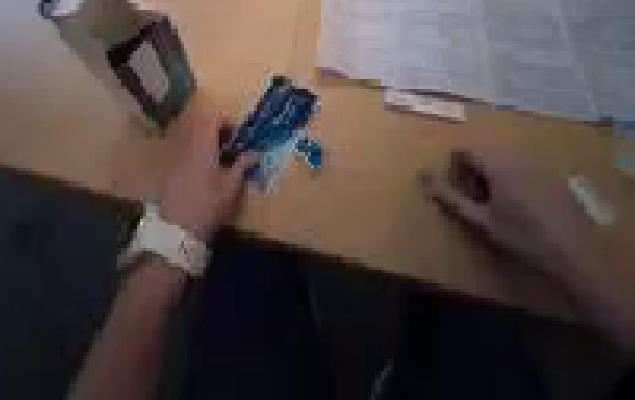
视觉工具实际返回图片 3

视觉工具实际返回图片 4
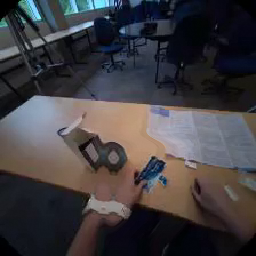
视觉工具实际返回图片 5
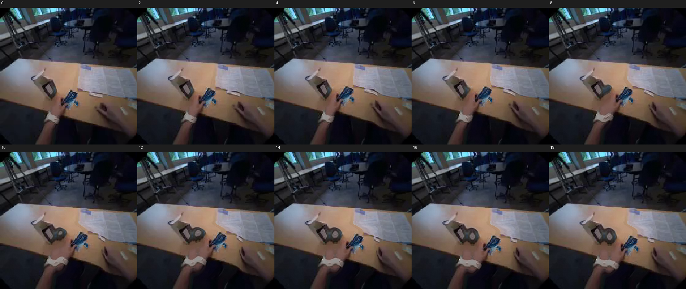
视觉工具实际返回图片 6

视觉工具实际返回图片 7
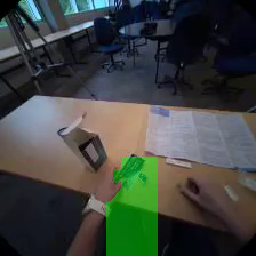
视觉工具实际返回图片 8
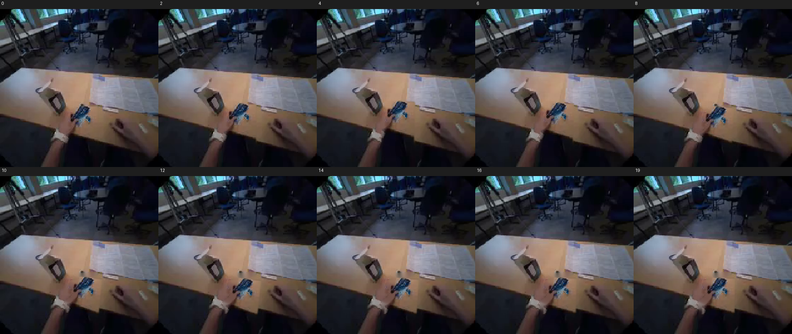
视觉工具实际返回图片 9
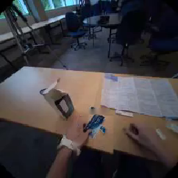
视觉工具实际返回图片 10

视觉工具实际返回图片 11
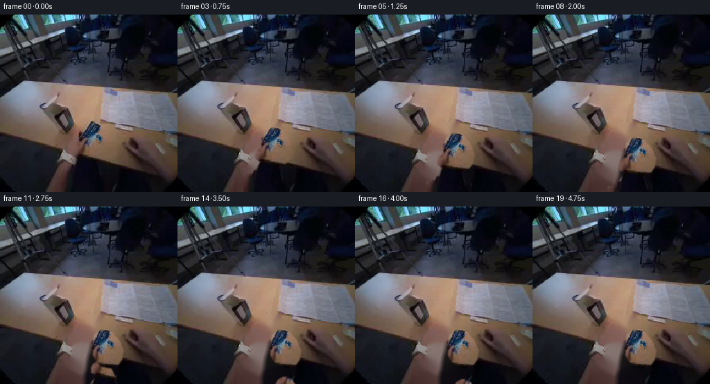
视觉工具实际返回图片 12
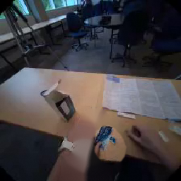
视觉工具实际返回图片 13
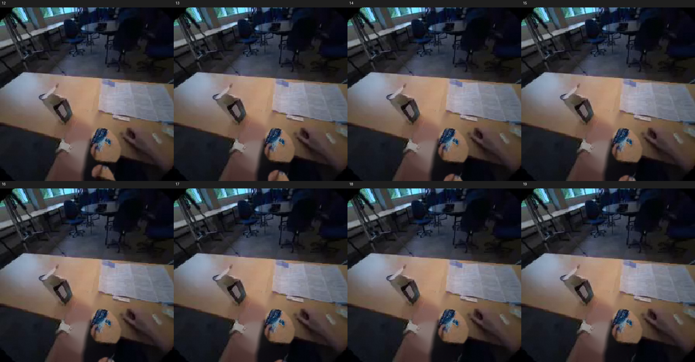
视觉工具实际返回图片 14
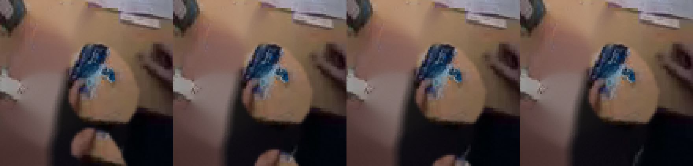
保存候选 5 份；完成命令 32 次；可验证图片返回 14 张。原始 API 响应与完整日志保留在本地。